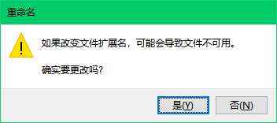
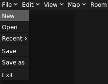
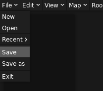
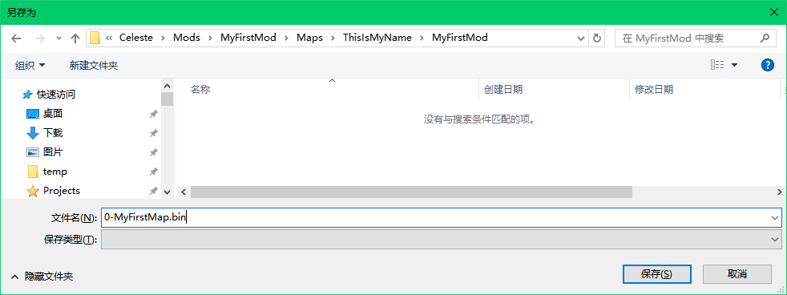

Mod 结构
Everest 支持加载三种格式的 Mod：
- 零散的
.bin文件（也就是蔚蓝地图文件的格式）作为单独的地图 - 文件夹形式的 Mod
- 压缩包形式的 Mod，压缩包内的结构与文件夹形式的 Mod 相同
一般已经发布的 Mod 会使用第三种格式，而第二种格式一般用在 Mod 制作时。虽然第一种格式也被支持，但是这里并不推荐。
Mod 文件夹的结构
一般地，一个包含可游玩地图的 Mod 有这样的结构：
- 📁
Dialog：包含游戏中出现的不同语言的文本 - 📁
Graphics：存放游戏中与画面相关的资源 - 📁
Maps：存放地图文件 - 📄
everest.yaml：Everest用来识别你的 Mod 的“Mod 信息清单”
其中只有 everest.yaml 是必须的，其他部分都是可选的。
现在我们在游戏的 Mods 文件夹中新建一个文件夹，并命名为 MyFirstMod，然后新建必须的文件 everest.yaml。
文件后缀名
Windows 默认不显示文件的后缀名，你需要手动启用它：

请确保你的文件名是 everest.yaml，而不是 everest.yaml.txt。在更改了后缀名时 Windows 应该会有如下弹窗警告你：

我们清楚我们正在做什么，所以我们选择 是(Y)。
everest.yaml 文件
这是一个 yaml 格式的文件，不过在这里你并不需要掌握 yaml 格式，对于一个普通的 Mod 来说，你只需要用任何文本编辑器打开并写下如下行内容，其余内容 Loenn 会自动帮你填写：
| everest.yaml | |
|---|---|
1 2 3 4 5 | |
注意
yaml 格式对空格非常敏感，这里建议直接复制上面的内容并更改需要的地方。不过后面为了让我们的 Mod 更加多彩，通常会接触到更多 YAML 以及 XML ，为了让这些文件更容易编辑，我会推荐使用 VS Code 作为编辑器并安装上 YAML 和 XML 插件。
在如上文件中，第一行写明了你 Mod 的名字，或者更准确一点，ID。这并不是你 Mod 显示的名字，而是一个唯一的标识符，它用于 Everest 内部加载标识你的 Mod，也用于 Mod 的更新检测，两个相同 ID 的 Mod 会被视为同一个 Mod。所以确保你的 ID 是唯一的。这里建议只使用大小写英文字母以及下划线和空格，尽量不要使用其它字符。
第二行 Version 后面写明了你 Mod 的版本，每当你需要为你的地图做出更新时，你需要更新这一项，以区别于该 Mod 的其他版本，更新检测时就会用到这一项来判断哪个版本是最新的。版本的格式是 x.y.z，其中 x 表示主版本，y 表示次版本，z 表示补丁版本。一般来说，x 的更改见于你的 Mod 发生了非常大的更新，例如，用 0 表示该 Mod 还是一个未完工版本，用 1 表示该 Mod 已经完成了主干部分，随后每当该 Mod 迎来例如新增或重做了若干章节等大更新， x 就会 +1。y 的增加适用于一些一般的更新，例如某一张图中新增了若干草莓，若干彩蛋面，或者重做了一部分面等。z一般用于小规模更新，例如修复了某些可以偷鸡的地方，改善了部分装饰或者微调物体等。不过这些并不是强制的，只需要它能传达出你想表达的意思即可。
之后只有一个第五行要注意，它写明了该 Mod 依赖的 Everest 的版本，格式为 1.v.0，其中 v 为 Everest 的版本号。为了确保你的 Mod 出现最少的问题，建议将这个值设置为你制作 Mod 时用到的 Everest 版本（一般不建议使用非 stable 版本的 Everest 制作 Mod）。
Maps 文件夹
现在我们可以创建一个 Maps 文件夹用来存放我们的地图了：
- 📁
Maps- 📁 YourName
- 📁 ModName
- 📁 YourName
是的这的确是在套娃，Everest 加载 Mod 时大概可以认为只是在合并所有文件夹，所以在公共的 Maps 文件夹下我们应尽量创建尽可能唯一的到你的地图文件的路径，最常见的做法就是在顶级文件夹 Maps 下新建以你的名字命名的文件夹，然后再在里面新建一个以 Mod 名字命名的文件夹（这里使用你之前在 everest.yaml 中写的 Mod 名字最好），最后就到了我们自由发挥的地方了。我们会在后续多次使用到这两个名字，所以请务必记住它们。
在这里以及后续部分，我会采用 ThisIsMyName 作为名字，MyFirstMod 作为 Mod 名字。
.bin 文件
在新建好 Maps 中层层的文件夹后，我们就可以创建地图了，在 Loenn 里创建一个地图只需要按下 Ctrl+N，或者在菜单中选择 File -> New。然后按下 Ctrl+S 来保存它，或者在菜单中选择 File -> Save 来保存它。
 

文件名字
你可能注意到了我们在前面加了一个 0- 的前缀，这是用来手动指定顺序的，默认 Everest 会按照文件名来排序你的地图，每一个地图文件都会被解析为一个游戏中的章节，如果你要制作一个多章节的 Mod，那么你需要这样才能指定这些章节的解锁顺序。
到此，你就可以在游戏中查看到地图的存在了，不过我们还不能进去，因为我们的地图没有任何一面，这时进去 Everest 只会报一个错。